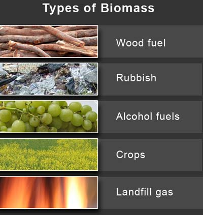

Biomass
Indroduction to Biomass |
Biofuel is made by using
all organic materials made from plants and animals. It contains stored energy
from the sun. When plants obsorb the sun's energy it is called photosynthesis.
Then animals consume the plants with energy, and then we eat the animals and
the energy is passed on to us. Biomass is a renuable energy source because
we can keep regrowing crops and trees. Wood the most common, manuere, trees,
and some trash are all biofuels.
When biofuel is burned it realeases heat. The wood in your fire place is a
source of biofuel. The waste from wood and trash can be burned, and produces
steam for making electricity and to producing heat for industries and homes.Biomass
can be burned in different ways.Iit can be converted into gas, or transportation
fuels such as ethanol and biodiesel. Natural gas is mainly composed of methane.
Rotting garbage and human waste release methane gas, also called " landfill"
gas and "biogas". Sugar cane can be changed to produce ethanol.
Left over vegetable oil and animal fats can be transformed into biodiesel.
3% of the energy in the u.s is made by biofuel. People in the united states
are trying to figure out different ways to create biofuel.
Wood is the most common source of biomass, people have been burining it for
heating and cooking. Until the mid 1800s wood was the main source of energy
in the U.S and the rest of the world. 3 percent of the energy in the us is
biomass.
|  | Different Types of Biomass. |
Process
of Biomass |
You can get wood, manuere,
plants and animals, basically anything orgainic and burnable. Then you shred
it, to make it easier to burn and reduce emmisions. Then
it goes into a cumbustion chamber where it is burnt. Then the heat heats up
a pool of water which boils creating steam. That steam, forces the generator
to spin. Inside the generator are turbines that are spinning. On the end of
the spinning shaft there are copper coild wires that are spinning along with
the spinning shaft. In them there are atoms, inside the atoms are protons
and electrons. A giant magnet surrounds the copper coils and extracts the
electrons. Then they go through the shaft, through some wires, and into your
home switching on the light bulb.
| A magnet that could extract the electrons from the copper coils. |
click here to go back |